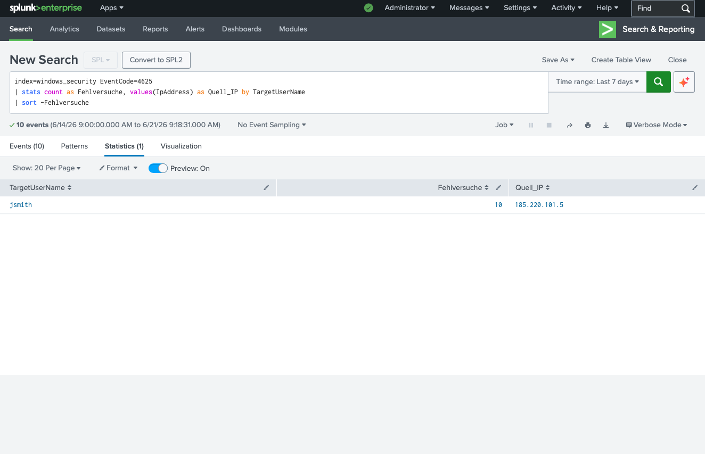
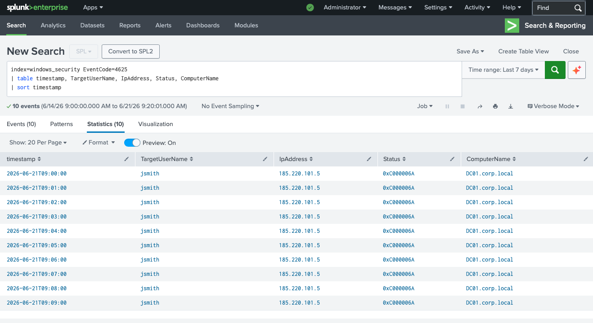
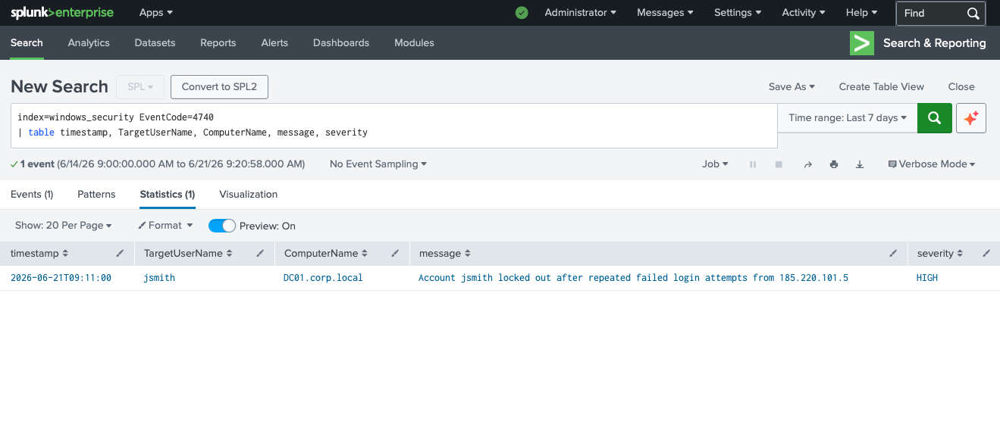

Was ist ein Brute-Force-Angriff?
Ein Brute-Force-Angriff auf Windows-Konten bedeutet: ein Angreifer probiert systematisch Passwörter durch, bis eines funktioniert. Windows protokolliert jeden Fehlversuch mit EventID 4625 (Failed Logon) im Security Event Log. Nach einer konfigurierbaren Anzahl von Fehlversuchen sperrt Windows das Konto automatisch — das ist EventID 4740 (Account Locked Out).
Im SOC ist ein AU2-Storm (viele 4625-Events in kurzer Zeit von derselben IP) ein klassischer Erkennungsindikator. Besonders verdächtig: Logon Type 3 (Network) von einer externen IP direkt auf den Domain Controller.
185.220.101.5 ist eine bekannte Tor-Exit-Node — ein klares Indiz, dass der Angreifer seine echte IP verschleiern will. Tor-IPs tauchen regelmäßig in Threat Intelligence Feeds auf.
Event IDs — Was Windows protokolliert
Analyse — Schritt 1: Wer hat wie oft versagt?
Der erste Schritt ist immer: wie viele Fehlversuche gibt es, und von welcher IP?
Mit stats count
gruppiere ich alle 4625-Events nach Benutzer und Quell-IP.

// Ergebnis: jsmith — 10 Fehlversuche von der Tor-Exit-Node 185.220.101.5
Befund: Benutzer jsmith hat exakt 10 fehlgeschlagene Anmeldeversuche — alle von derselben externen IP 185.220.101.5. Das ist kein Zufall, das ist ein Brute-Force-Angriff.
Analyse — Schritt 2: Zeitlicher Verlauf
Ein Blick auf die Zeitstempel zeigt das typische Brute-Force-Muster: exakt eine Minute Abstand zwischen jedem Versuch — das ist ein automatisiertes Tool, kein Mensch der Passwörter eingibt.

// 10 Versuche von 09:00 bis 09:09 — Status 0xC000006A (falsches Passwort) — DC01.corp.local
Status 0xC000006A bedeutet: das Konto existiert, aber das Passwort ist falsch. Der Angreifer kennt also den Benutzernamen jsmith bereits — er macht Username-Enumeration oder hat den Namen anderweitig erhalten.
Analyse — Schritt 3: Kontosperrung bestätigen
Nach dem 10. Fehlversuch greift die Windows Account Lockout Policy. EventID 4740 bestätigt die automatische Sperrung.

// EventID 4740 um 09:11 — jsmith gesperrt auf DC01.corp.local — Severity: HIGH
Account Lockout Policy hat funktioniert: Der Angreifer konnte keinen erfolgreichen Login durchführen. Das Konto wurde nach 10 Versuchen automatisch gesperrt — genau so, wie es konfiguriert war.
Incident Response — Was als nächstes?
Als SOC Analyst wären nach dieser Erkennung folgende Schritte notwendig: